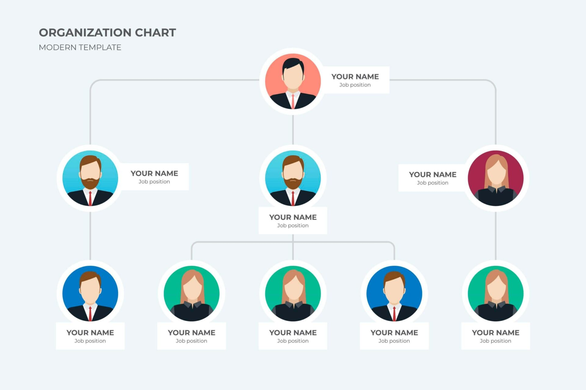

Struktur Organisasi
Pengertian
Menurut Stoner dan Wankell, struktur organisasi adalah susunan dan hubungan antarbagian komponen dan posisi dalam suatu perkumpulan, Struktur organisasi juga menunjukkan hierarki dan struktur otoritas organisasi serta memperlihatkan hubungan pelaporannya. Jadi, secara umum. Struktur organisasi adalah hubungan dari setiap bagian yang ada di dalam suatu organisasi atau suatu perkumpulan.

Faktor-faktor yang dapat mempengaruhi rancangan struktur organisasi
1. Strategi dan Struktur Organisasi strategi akan menentukan bagaimana jalur wewenang dan saluran komunikasi diatur antara para manajer dan sub unit. Strategi akan mempengaruhi informasi yang mengalir di sepanjang jalur tersebut, serta mekanisme perencanaan dan pengambilan keputusan.
2. Teknologi sebagai Faktor Penentu Struktur bentuk teknologi yang digunakan oleh suatu organisasi tertentu untuk menghasilkan produknya (atau metode penawaran jasa) juga mempengaruhi cara pengaturan organisasi.
3. Manusia sebagai faktor penentu struktur Para manajer mengambil keputusan yang berhubungan dengan jalur komunikasi serta hubungan antara unit-unit kerja. Dalam membuat keputusan para manajer dipengaruhi oleh kebutuhan mereka sendiri dan kecendrungan lingkungan kerja mereka.
4. Ukuran dan struktur baik ukuran organisasi secara menyeluruh maupun ukuran sub-sub unitnya akan mempengaruhi struktur. Organisasi yang lebih besar cendrung memiliki spesialisasi aktivitas yang lebih luas dan prosedur yang lebih formal.
Pendekatan dalam Proses Departemenlisasi
Dalam mendesain organisasi yang sekaligus menggambarkan suatu struktur organisasi khususnya dalam proses departementalisasi ada beberapa pendekatan, yaitu.
1. Berdasarkan Fungsional
2. Berdasarkan Produk
3. Berdasarkan Pelanggan
4. Berdasarkan Geografis, dan
5. Berdasarkan Matriks
Struktur Organisasi Formal dan Informal
1. Yang termasuk ke dalam Struktur organisasi Formal adalah struktur-struktur organisasi yang telah dibicarakan di atas, antara lain : Struktur Organisasi Fungsional, Struktur Organisasi Produk/Pasar, Struktur Organisasi Pelanggan, Geografis, Matriks.
2. Hubungan-hubungan yang berlangsung dalam organisasi tentu saja tidak hanya terbatas pada hal-hal yang secara resmi yang digambarkan dalam bagan organisasi formal. Para manajer selamanya menyadari bahwa “Organisasi Informal” hidup berdampingan dengan organisasi formal. Organisasi informal berkembang tidak lain sebagai perwujudan kebutuhan pribadi dan kelompok dari warga perusahaan.
Sumber
-
PPT Pertemuan 10.